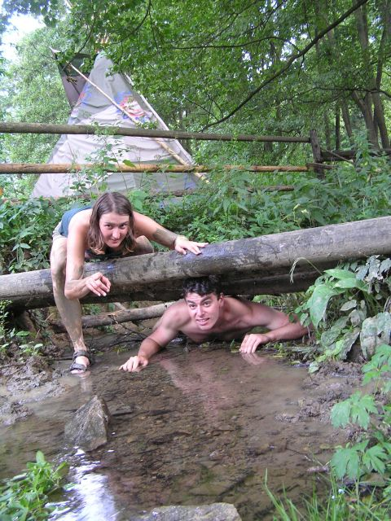

Kolekce Spirit Horse 2008
Připravili jsme pro Vás kolekci oblečení Spirit Horse. Kolekce obsahuje různé modely, které jsou určeny zejména pro aktivní pobyt v přírodě, pro večerní posezení u táboráků či pro nenáročný a pohodový program. Některé modely obsahují doplňky pro pobyt v deštivém či chladném počasí.
Statické modely
Statický pohodový model. Model určený pro statický program při slunném počasí. Triko s krátkým rukávem, kraťasy, tříčtvrťáky, kšiltovka, sluneční brýle. Páskáče, botasky, tenisky. Opalovací krém.
Statický model. Tento model ocení zejména koně ve velmi slunném počasí.
Statický noční model. Leňa s Lubšou předvádí oblečení pro noční rozjímání u ohně. Deka, nezbytný módní doplněk letošního léta, dokáže na rozdíl od ohně v noci zahřát i na zádech... Za pozornost stojí také aluminiový ešus.
Dynamický model
Dynamický model. Oblečení pro dopolední a odpolední pobyt v přírodě. Janka předvádí sportovní variantu -- krátké triko, tříčtvrťáky, ponožky, sandály. Peklův model, dlouhé kalhoty a flisku, oceníte kromě sportovního vyžití v chladnějším počasí také jako indoorovou variantu do večerního tee-pee.

Dynamický vodní model. Plavky. Do vody. Do bláta. Testováno mlokem a Romanem.
Těžce-dynamický model
Těžce-dynamický model. Určen pro aktivní pohyb za jakéhokoliv druhu počasí. Pohory či páskáče chrání nohy před poraněním, plavky zaručují dostatek volného pohybu. Proti větru a dešti ochrání pláštěnka či pončo. Jako doplněk je možné použít klobouk.
Obecná rada na závěr. Neexistuje špatné počasí, existují pouze špatně oblečení účastníci! :-)